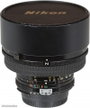

Nikon AI 15/5.6
尼康诱惑世界，1972年15毫米镜头在它的目录出现，但它从未见过生产。这个真实的镜头出现是在1973年的夏天，是最疯狂的35毫米胶卷摄影镜头。15mm f/5.6的镜头经历了一些改变，1978年被更快的AIS 15mm f/3.5镜头所取代。 AI镜头的出现是在1977年-1978年，编号从350001开始，官方确认的编号是350014-350688，也就是674个镜头。
这是一只超广角镜头，畸变校正的非常好，内置4个滤色镜片，可以转换选择，N-清晰、O56橙黄、Y48和R60，N应该是UV类滤镜，其他三个均是黑白胶卷摄影类滤镜。
最大光圈f/５.6比较小，前镜头盖是90K，和15mm f/3.5前镜头盖是一样的，虽然15mm f/3.5镜头相对f值有所提高，但两头在同等f/5.6值下，15mm f/5.6镜头绝对光通量要大于15mm f/3.5镜头绝对光通量。
